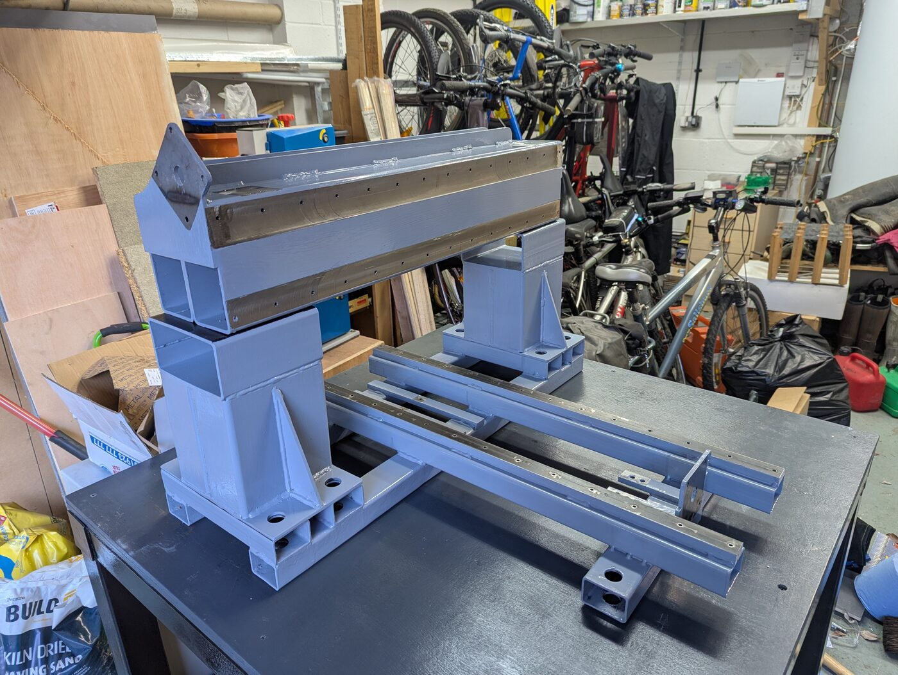
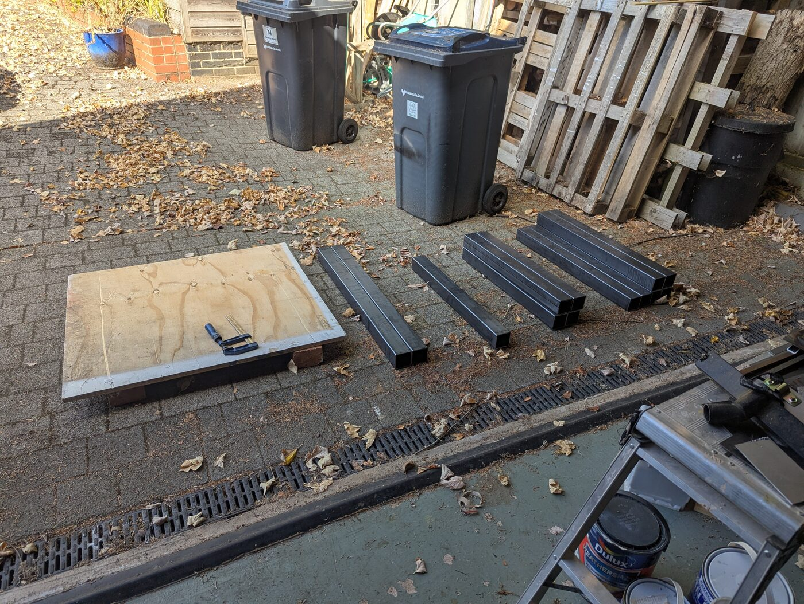
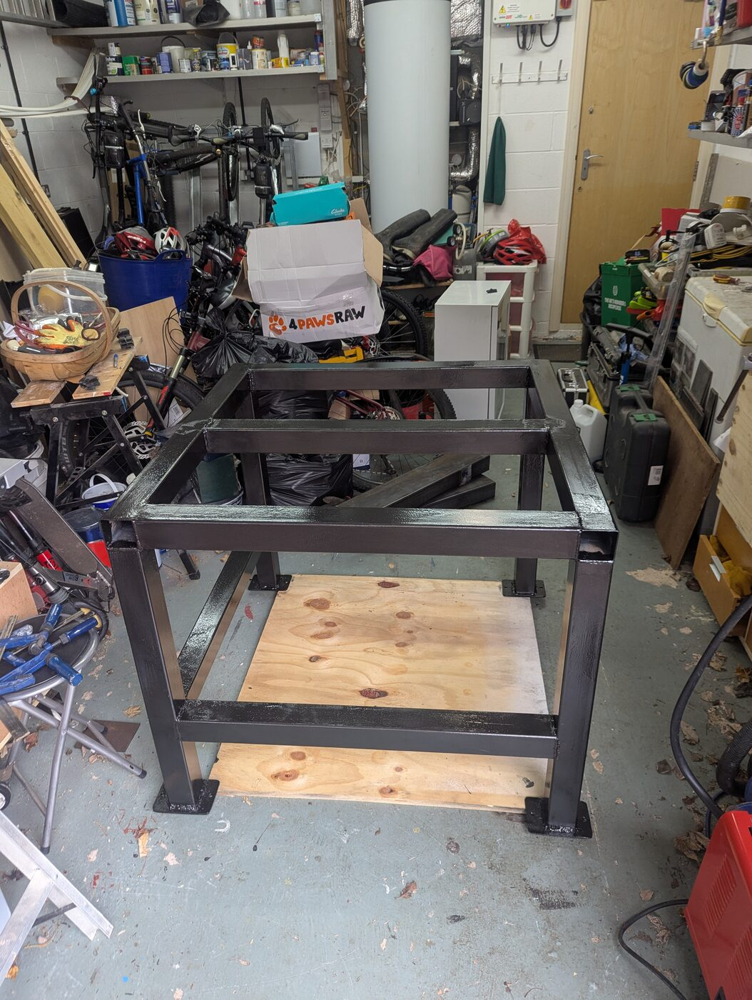
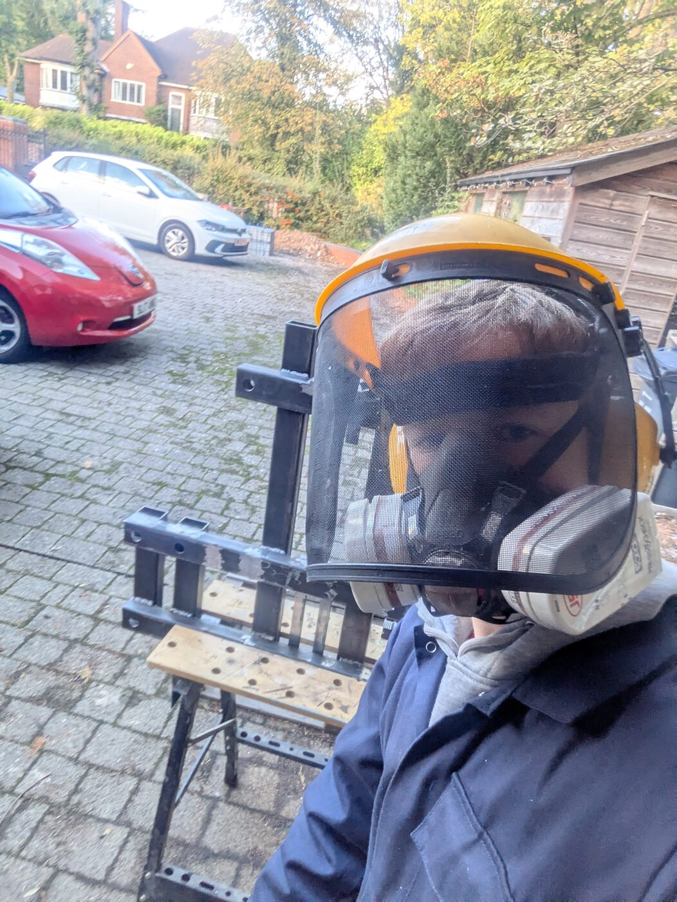
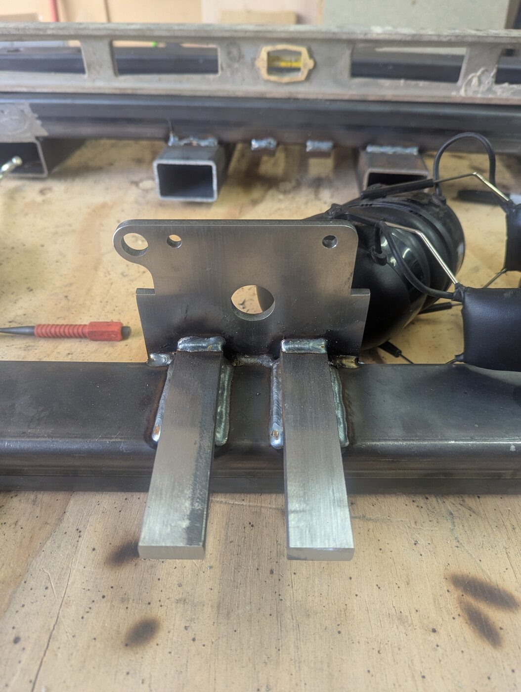
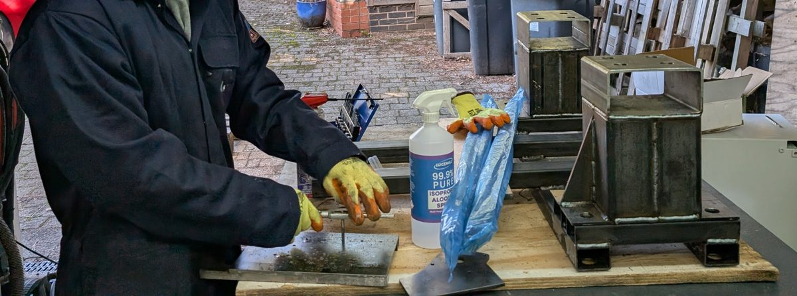
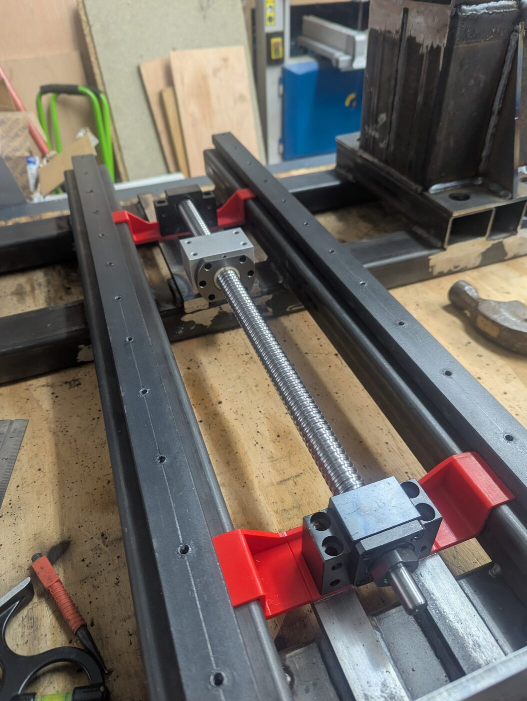
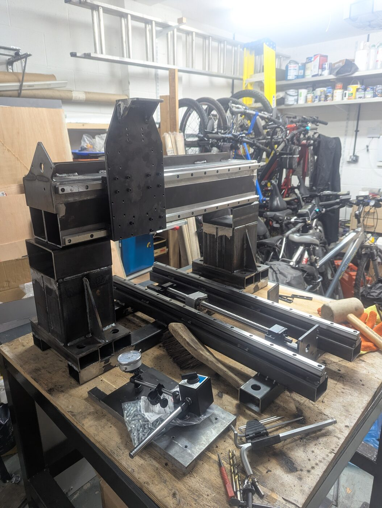
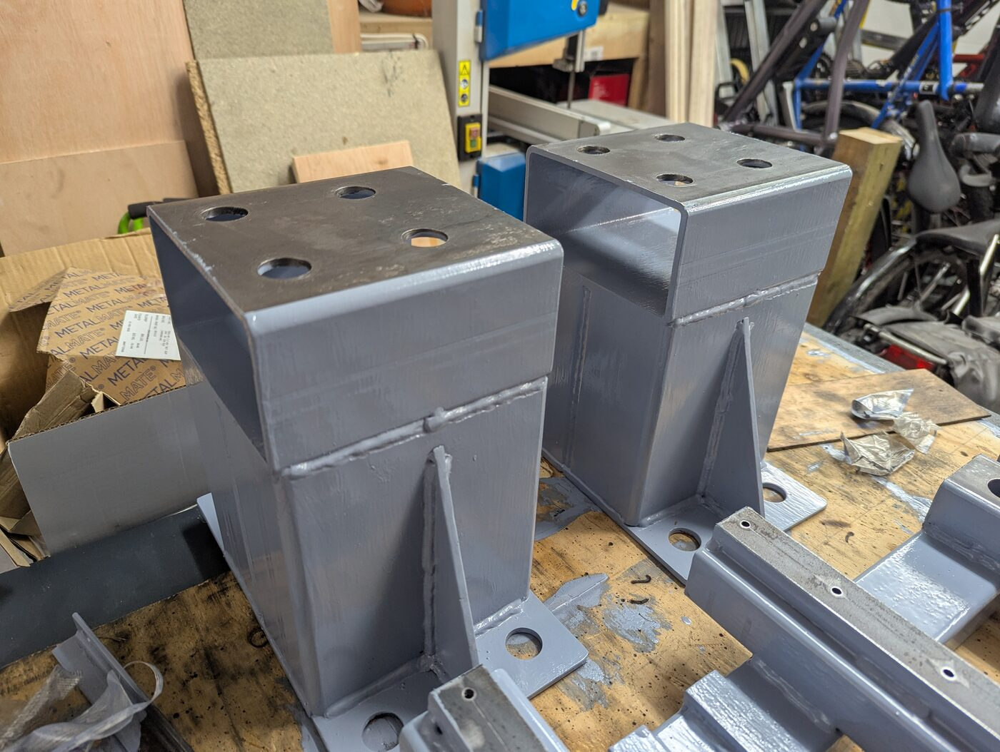

Metal-cutting CNC mill
2026 to 2027, in progress
My first CNC router could cut wood well but flexed too much for metal. So I designed a second machine from scratch in Fusion 360, aimed at stiffness: a fixed steel bridge with a moving table, profile linear rails and ballscrews.
I chose welded steel box section, left over from building work, for the frame. The columns will be filled with a sand and oil mix to damp vibration. I considered a cast-concrete frame and epoxy granite, but rejected them as impractical and expensive when the steel is already rigid.
The bench and frame are welded, the columns and bridge are primed, and the rails and ballscrews are being fitted. The electronics come next, and I aim to finish the machine during my gap year.
- Drives
- Closed-loop NEMA 34 steppers; SFU2005 ballscrews on X and Y, SFU1605 on Z
- Spindle
- 2.2 kW, air-cooled
- Tools
- Fusion 360, plasma cutter, MIG and TIG welding, lathe, mill, taps and dies
- Funding
- Arkwright Scholarship and paid work at Safran

| Project | Metal-cutting CNC mill | ||
|---|---|---|---|
| Designed | W. Cowley | Software | Fusion 360 |
| Frame | Welded steel | Status | Build in progress |











